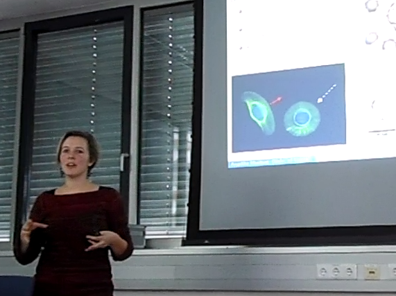

I studied Mathematics until the Diplom (Masters degree) and Molecular Biology until the Bachelors Degree and finished both studies in 2011 with distinction at the University of Vienna. I finished my Phd in 2015 with the group of Christian Schmeiser at the University of Vienna. Since April 2016 I work as a Post-doctoral researcher with Alex Mogilner at the Courant Institute at the New York University.
| A detailed CV can be found here. Upcoming Talks/Travel Plans Jan 2018: Joint Mathematical Meetings, Baltimore, USA June 2019: BIRS workshop: Bridging Cellular and Tissue Dynamics from Normal Development to Cancer July 2019, ICIAM, Valencia, Spain 2019: CMO workshop: Kinetic equations: recent developments and novel applications, Oaxaca, Mexico Past Talks/Travels |
 |
Sept 2018: Seminar Talk, Applied Math Seminar, University of Notre Dame, South Bend, US
Aug 12-17, 2018: BIRS workshop "Mathematics of the Cell: Mechanical and Chemical Signaling across Scales"
July 2018: 13th World Congress on Computational Mechanics, New York City
June 17-23: MRC, Agent-based Modeling in Biological and Social Systems, Rhode Island, US
May 2018: Collective Dynamics and Self-organization in Biological Sciences, Edinburgh
April 2018: Applied PDEs and kinetic equations: from physics to life sciences and beyond, Vienna, Austria (Birthday workshop in honor of C. Schmeiser's 60th birthday)
Jan 2018: Faculty Colloquium at the University of British Columbia (UBC), Vancouver
Feb 2018: Seminar Talk at the Center for Cell Dynamics of JHU School of Medicine, Baltimore
Dec 2017: PDE Afternoon, Technical University of Vienna, Austria
Dec 2017: Mega Fly Meeting, Memorial Sloan Kettering Cancer Center, New York, USA
Dec 2017: SIAM Conference on Analysis of Partial Differential Equations, Baltimore, USA
Sept 2017: INdAM Meeting "Mathematical Physics of Living Systems", Cortona, Italy
Aug 2017: Applied Mathematics, Modeling and Computational Science (AMMCS) International Conference, Waterloo, Canada
May 2017: American Mathematical Society (AMS) Sectional Meeting, New York, USA
Oct 2016: EMBO Course: Modeling Cellular Processes in Space and Time, Porquerolles, France
Aug 2015: International Conference of Industrial and Applied Mathematics (ICIAM), Beijing
Sept 2014: Workshop on "Mathematical Modelling in Biology and Physiology", Vienna, Austria
June 2014: "European Conference of Mathematical and Theorical Biology" (ECMTB), Göteborg, Sweden
Jan 2014: Workshop "Mathematical Modelling in Biology", Graz, Austria
Jan 2013: SciComp2013 "Software Frameworks for Challanging Computational Problems", Crete, Greece
Sept 2011: ICMS Workshop "Non-linear PDEs arising in Mathematical Biology", Edinburgh, Scotland